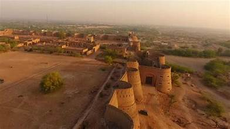
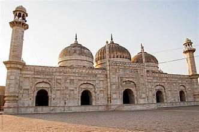

Derawar Fort
A majestic desert fort in Cholistan, Bahawalpur, Pakistan.
A majestic desert fort in Cholistan, Bahawalpur, Pakistan.
Derawar Fort is a massive square fortress located in the Cholistan Desert near Bahawalpur, Punjab, Pakistan. It was originally built in the 9th century by Rai Jajja Bhatti, a Hindu Rajput ruler of the Bhatti clan. Later in the 18th century, the fort was taken over and rebuilt by the Abbasi rulers of Bahawalpur. The fort is famous for its imposing structure and its 40 gigantic bastions that rise from the desert sands, visible for many kilometers.

Derawar Fort is a square structure, each side about 1,500 meters long. The fort is surrounded by 40 towering bastions, each up to 30 meters high, giving it a commanding presence in the desert. Its walls, built of clay bricks, are up to 30 meters high and 10 meters thick.
The interior of the fort once contained palaces, mosques, and residential quarters, though much has fallen into ruin. The nearby Derawar Mosque, built in 1849 by Nawab Bahawal Khan, is modeled after the Moti Masjid in Delhi’s Red Fort.
